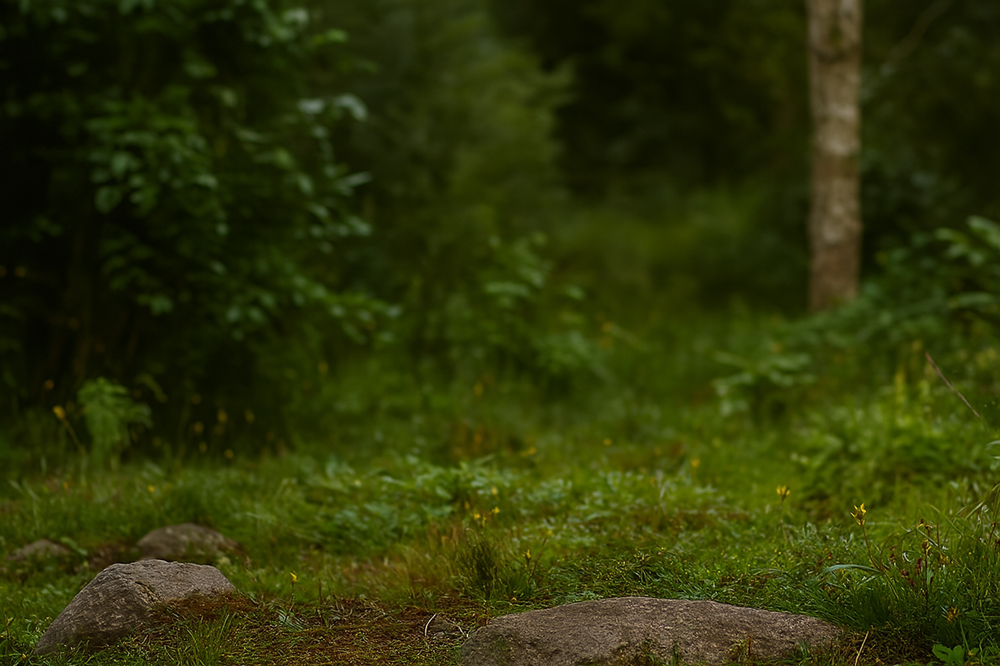
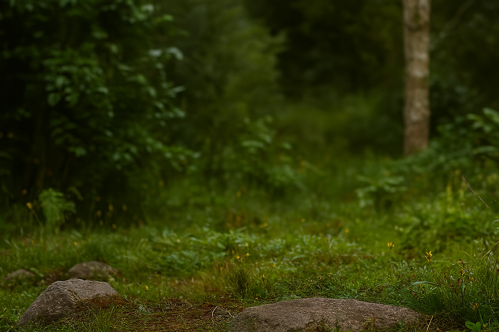
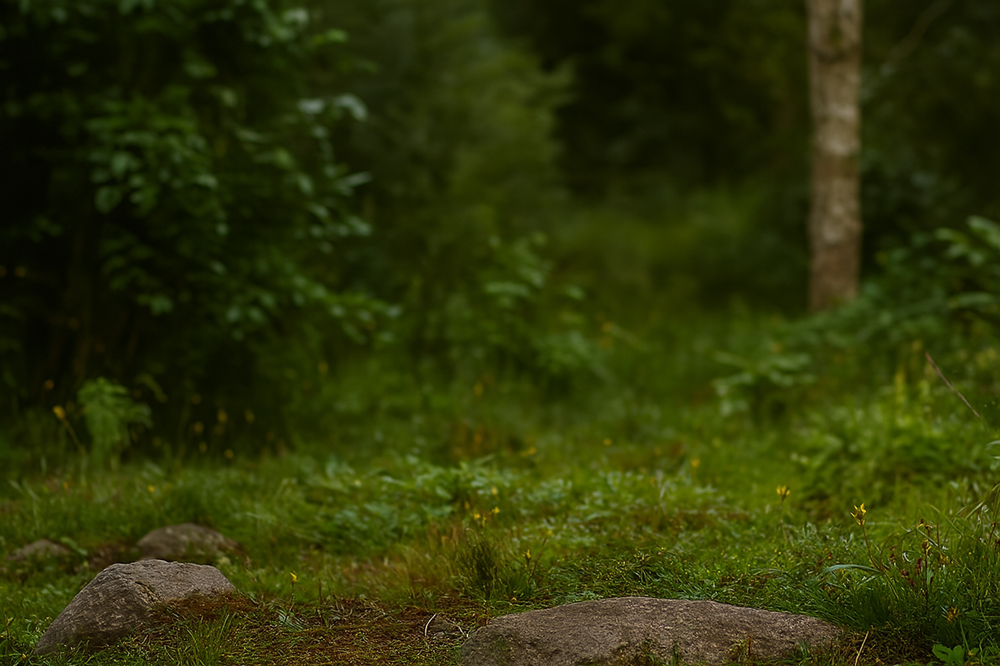
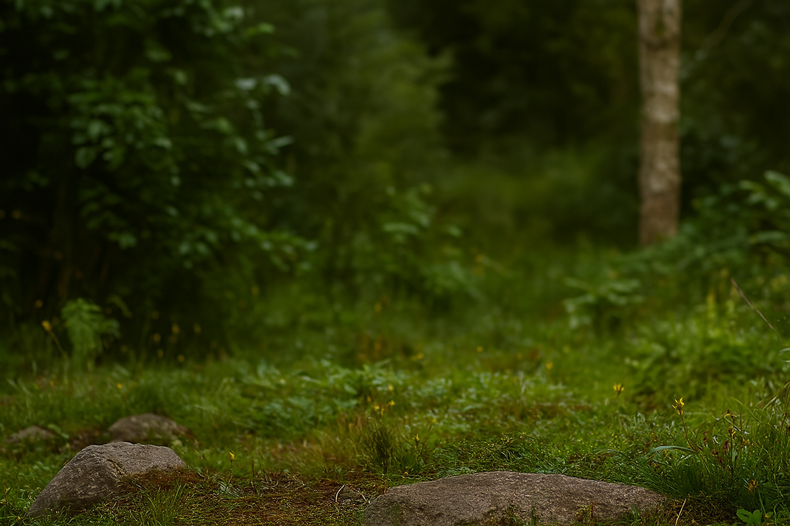

Ein spezieller Bär ist der Panda. Er heisst auf Latein "Ailuropoda melanoleuca", nicht wie die anderen Bären "Ursus". Der Panda ist aber auch ein Säugetier. Ein ausgewachsener Panda wird zwischen 1,0 und 1,5m gross, was ihn im Vergleich zu den anderen Bären ziemlich klein macht.Er wird auch nicht so schwer wie die anderen Bären, er wiegt nämlich nur zwischen 60 und 140kg. Das Alter des Pandas beträgt normalerweise zwischen 10 und 25 Jahren. Sein Fell ist schwarz-weiss. Auch anders als die anderen Bären ist der Panda ein "herbivor", Latein für Pflanzenfresser. Seine Ernährung ist sehr einseitig und besteht nur aus Bambus, von dem er mehrere Kilogrwamm essen muss um satt zu werden. Er lebt in den chinesischen Subtropischen Wäldern.
| Name | Lateinischer Name | Klasse | Grösse | Gewicht | Alter | Aussehen | Ernährungstyp | Nahrung | Verbreitung | Lebensraum |
|---|---|---|---|---|---|---|---|---|---|---|
| Panda | Ailuropoda melanoleuca | Säugetiere | 1,0 - 1,5m | 60 - 140kg | 10 - 25 Jahre | schwarz-weisses Fell | Pflanzenfresser (herbivor) | Bambus | China | Subtropische Wälder |